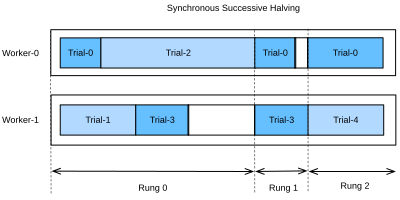
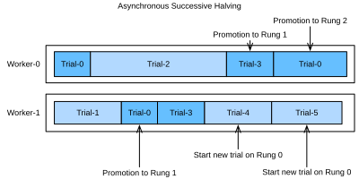

Successive Halving bất đồng bộ¶
Như đã thấy trong sec_rs_async, chúng ta có thể tăng tốc HPO bằng cách phân tán việc đánh giá các cấu hình siêu tham số trên nhiều instance hoặc nhiều CPU / GPU trên một instance. Tuy nhiên, so với random search, việc chạy successive halving (SH) bất đồng bộ trong một thiết lập phân tán không đơn giản. Trước khi có thể quyết định cấu hình nào chạy tiếp theo, trước tiên chúng ta phải thu thập tất cả quan sát tại mức rung hiện tại. Điều này yêu cầu đồng bộ hóa các worker tại mỗi mức rung. Ví dụ, với mức rung thấp nhất \(r_{\mathrm{min}}\), trước tiên chúng ta phải đánh giá tất cả \(N = \eta^K\) cấu hình, trước khi có thể promote \(\frac{1}{\eta}\) trong số đó lên mức rung tiếp theo.
Trong bất kỳ hệ phân tán nào, đồng bộ hóa thường hàm ý thời gian nhàn rỗi của worker. Thứ nhất, chúng ta thường quan sát biến thiên lớn về thời gian huấn luyện giữa các cấu hình siêu tham số. Ví dụ, giả sử số bộ lọc trên mỗi tầng là một siêu tham số, thì các mạng có ít bộ lọc hơn sẽ huấn luyện xong nhanh hơn các mạng có nhiều bộ lọc hơn, kéo theo thời gian worker nhàn rỗi do straggler. Hơn nữa, số slot trong một mức rung không phải lúc nào cũng là bội số của số worker, trong trường hợp đó một số worker thậm chí có thể ngồi nhàn rỗi cả một batch.
Hình synchronous_sh cho thấy lịch của SH đồng bộ với \(\eta=2\) cho bốn trial khác nhau với hai worker. Chúng ta bắt đầu bằng cách đánh giá Trial-0 và Trial-1 trong một epoch và ngay lập tức tiếp tục với hai trial tiếp theo khi chúng kết thúc. Trước tiên chúng ta phải chờ đến khi Trial-2 kết thúc, mất nhiều thời gian hơn đáng kể so với các trial khác, trước khi có thể promote hai trial tốt nhất, tức Trial-0 và Trial-3, lên mức rung tiếp theo. Điều này gây thời gian nhàn rỗi cho Worker-1. Sau đó, chúng ta tiếp tục với Rung 1. Ở đây Trial-3 cũng mất nhiều thời gian hơn Trial-0, dẫn đến thêm thời gian nhàn rỗi của Worker-0. Khi đạt Rung-2, chỉ còn trial tốt nhất, Trial-0, chiếm đúng một worker. Để tránh Worker-1 nhàn rỗi trong thời gian đó, hầu hết các triển khai SH đã tiếp tục với vòng tiếp theo và bắt đầu đánh giá các trial mới (ví dụ Trial-4) trên rung đầu tiên.

Asynchronous successive halving (ASHA) [li-arxiv18] điều chỉnh SH cho kịch bản song song bất đồng bộ. Ý tưởng chính của ASHA là promote cấu hình lên mức rung tiếp theo ngay khi chúng ta thu thập được ít nhất \(\eta\) quan sát trên mức rung hiện tại. Quy tắc quyết định này có thể dẫn đến các promotion dưới mức tối ưu: cấu hình có thể được promote lên mức rung tiếp theo, nhưng nhìn lại thì không so sánh thuận lợi với hầu hết cấu hình khác ở cùng mức rung. Mặt khác, bằng cách này chúng ta loại bỏ tất cả các điểm đồng bộ hóa. Trong thực tế, các promotion ban đầu dưới mức tối ưu như vậy chỉ có tác động khiêm tốn đến hiệu năng, không chỉ vì thứ hạng các cấu hình siêu tham số thường khá nhất quán giữa các mức rung, mà còn vì các rung lớn dần theo thời gian và ngày càng phản ánh tốt hơn phân phối các giá trị metric ở mức đó. Nếu một worker rảnh nhưng không có cấu hình nào có thể được promote, chúng ta bắt đầu một cấu hình mới với \(r = r_{\mathrm{min}}\), tức mức rung đầu tiên.
asha cho thấy lịch của cùng các cấu hình với ASHA. Khi Trial-1 kết thúc, chúng ta thu thập kết quả của hai trial (tức Trial-0 và Trial-1) và ngay lập tức promote trial tốt hơn trong số đó (Trial-0) lên mức rung tiếp theo. Sau khi Trial-0 kết thúc ở rung 1, ở đó có quá ít trial để hỗ trợ một lần promotion tiếp theo. Do đó, chúng ta tiếp tục với rung 0 và đánh giá Trial-3. Khi Trial-3 kết thúc, Trial-2 vẫn đang chờ. Tại thời điểm này, chúng ta có 3 trial đã đánh giá trên rung 0 và một trial đã đánh giá trên rung 1. Vì Trial-3 hoạt động kém hơn Trial-0 ở rung 0, và \(\eta=2\), chúng ta chưa thể promote trial mới nào, và Worker-1 bắt đầu Trial-4 từ đầu. Tuy nhiên, khi Trial-2 kết thúc và cho điểm kém hơn Trial-3, Trial-3 được promote lên rung 1. Sau đó, chúng ta thu thập được 2 đánh giá trên rung 1, nghĩa là bây giờ có thể promote Trial-0 lên rung 2. Đồng thời, Worker-1 tiếp tục đánh giá các trial mới (tức Trial-5) trên rung 0.

from d2l import torch as d2l
import logging
logging.basicConfig(level=logging.INFO)
import matplotlib.pyplot as plt
from syne_tune.config_space import loguniform, randint
from syne_tune.backend.python_backend import PythonBackend
from syne_tune.optimizer.baselines import ASHA
from syne_tune import Tuner, StoppingCriterion
from syne_tune.experiments import load_experiment
Hàm mục tiêu¶
Chúng ta sẽ dùng Syne Tune với cùng hàm mục tiêu như trong sec_rs_async.
def hpo_objective_lenet_synetune(learning_rate, batch_size, max_epochs):
from d2l import torch as d2l
from syne_tune import Reporter
model = d2l.LeNet(lr=learning_rate, num_classes=10)
trainer = d2l.HPOTrainer(max_epochs=1, num_gpus=1)
data = d2l.FashionMNIST(batch_size=batch_size)
model.apply_init([next(iter(data.get_dataloader(True)))[0]], d2l.init_cnn)
report = Reporter()
for epoch in range(1, max_epochs + 1):
if epoch == 1:
# Initialize the state of Trainer
trainer.fit(model=model, data=data)
else:
trainer.fit_epoch()
validation_error = d2l.numpy(trainer.validation_error().cpu())
report(epoch=epoch, validation_error=float(validation_error))
Chúng ta cũng sẽ dùng cùng không gian cấu hình như trước:
min_number_of_epochs = 2
max_number_of_epochs = 10
eta = 2
config_space = {
"learning_rate": loguniform(1e-2, 1),
"batch_size": randint(32, 256),
"max_epochs": max_number_of_epochs,
}
initial_config = {
"learning_rate": 0.1,
"batch_size": 128,
}
Scheduler bất đồng bộ¶
Trước tiên, chúng ta định nghĩa số worker đánh giá các trial đồng thời. Chúng ta cũng cần chỉ định muốn chạy random search trong bao lâu, bằng cách định nghĩa một giới hạn trên cho tổng thời gian wall-clock.
n_workers = 2 # Needs to be <= the number of available GPUs
max_wallclock_time = 12 * 60 # 12 minutes
Code để chạy ASHA là một biến thể đơn giản của những gì chúng ta đã làm cho random search bất đồng bộ.
mode = "min"
metric = "validation_error"
resource_attr = "epoch"
scheduler = ASHA(
config_space,
metric=metric,
mode=mode,
points_to_evaluate=[initial_config],
max_resource_attr="max_epochs",
resource_attr=resource_attr,
grace_period=min_number_of_epochs,
reduction_factor=eta,
)
Ở đây, metric và resource_attr chỉ định các tên khóa dùng với callback report,
và max_resource_attr cho biết đầu vào nào của hàm mục tiêu
tương ứng với \(r_{\mathrm{max}}\). Hơn nữa, grace_period cung cấp \(r_{\mathrm{min}}\), và
reduction_factor là \(\eta\). Chúng ta có thể chạy Syne Tune như trước (việc này sẽ
mất khoảng 12 phút):
trial_backend = PythonBackend(
tune_function=hpo_objective_lenet_synetune,
config_space=config_space,
)
stop_criterion = StoppingCriterion(max_wallclock_time=max_wallclock_time)
tuner = Tuner(
trial_backend=trial_backend,
scheduler=scheduler,
stop_criterion=stop_criterion,
n_workers=n_workers,
print_update_interval=int(max_wallclock_time * 0.6),
)
tuner.run()
Lưu ý rằng chúng ta đang chạy một biến thể của ASHA, trong đó các trial hoạt động kém
bị dừng sớm. Điều này khác với triển khai của chúng ta trong
sec_mf_hpo_sh, nơi mỗi job huấn luyện được bắt đầu với một
max_epochs cố định. Trong trường hợp sau, một trial hoạt động tốt đạt đến
đầy đủ 10 epoch trước tiên cần huấn luyện 1, rồi 2, rồi 4, rồi 8 epoch, mỗi
lần bắt đầu lại từ đầu. Kiểu lập lịch tạm dừng-và-tiếp tục này có thể được
triển khai hiệu quả bằng cách checkpoint trạng thái huấn luyện sau mỗi epoch,
nhưng chúng ta tránh phần phức tạp thêm này ở đây. Sau khi thí nghiệm kết thúc,
chúng ta có thể truy xuất và vẽ kết quả.
Trực quan hóa quá trình tối ưu hóa¶
Một lần nữa, chúng ta trực quan hóa learning curve của từng trial (mỗi màu trong đồ thị biểu diễn một trial). So sánh điều này với random search bất đồng bộ trong sec_rs_async. Như đã thấy với successive halving trong sec_mf_hpo, hầu hết các trial bị dừng ở 1 hoặc 2 epoch (\(r_{\mathrm{min}}\) hoặc \(\eta * r_{\mathrm{min}}\)). Tuy nhiên, các trial không dừng tại cùng một thời điểm, vì chúng cần lượng thời gian khác nhau cho mỗi epoch. Nếu chúng ta chạy successive halving chuẩn thay vì ASHA, ta sẽ cần đồng bộ hóa các worker trước khi có thể promote cấu hình lên mức rung tiếp theo.
d2l.set_figsize([6, 2.5])
results = e.results
for trial_id in results.trial_id.unique():
df = results[results["trial_id"] == trial_id]
d2l.plt.plot(
df["st_tuner_time"],
df["validation_error"],
marker="o"
)
d2l.plt.xlabel("wall-clock time")
d2l.plt.ylabel("objective function")
Tóm tắt¶
So với random search, successive halving không hoàn toàn tầm thường để chạy trong một thiết lập phân tán bất đồng bộ. Để tránh các điểm đồng bộ hóa, chúng ta promote cấu hình lên mức rung tiếp theo nhanh nhất có thể, ngay cả khi điều này đồng nghĩa promote một số cấu hình sai. Trong thực tế, điều này thường không gây hại nhiều, và lợi ích của lập lịch bất đồng bộ so với đồng bộ thường lớn hơn nhiều so với tổn thất từ việc ra quyết định dưới mức tối ưu.